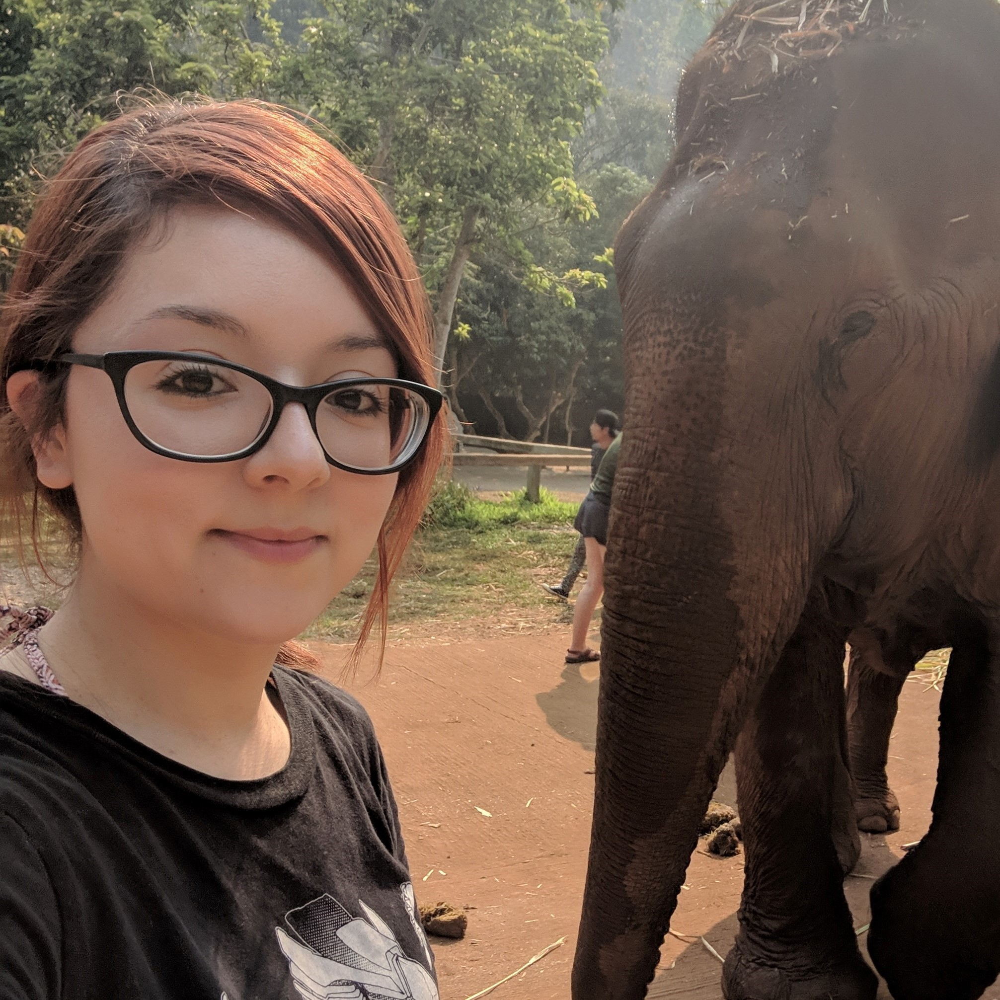

Emma Zarate

I was adaptable and open-minded before my life in Asia. Now I'm a ball of clay. Ready to fit the right mold.
Skills
- Proficient: JavaScript, HTML, CSS
- Familiar with: C++, Elixir
- Interested in: Unity
- Willing to learn: Any
Languages
Projects


Sep. 2015 - June 2019
Kindergarten Homeroom Teacher
Worked on cross-departmental teams. Managed and fed 30 wild animals and learned the nuances of each and every one of them.
Jan. 2015 - Aug. 2015
Dell Inc. HQ
Worked in cross-departmental teams towards common goals. Referenced inter-organizational knowledge base to troubleshoot and solve technical problems while adhering to best practices.
Mar. 2014 - Dec. 2015
City of New Braunfels
Started off as a seasonal park ranger keeping cool and maintaining order and safety in high-pressure situations. Moved up to full time volunteer coordinator for the public library. Updated documentation for volunteer handbook. Included updating the volunteer application and position to be more inclusive of the community as well as streamlining processes for efficiency.